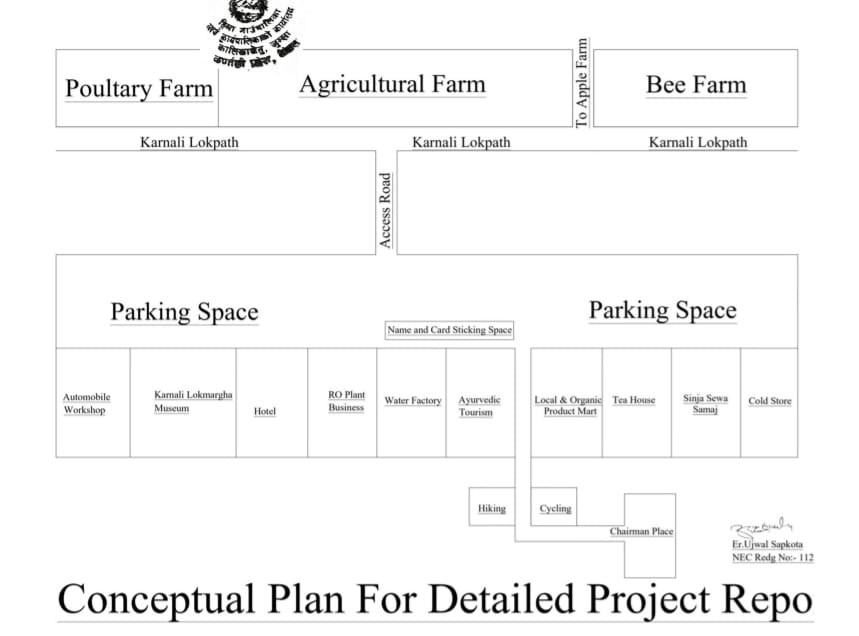

The birthplace of the Khas Arya, the capital of the ancient Sija Kingdom at Lamatada where King Nagraj ruled, the temple of Kanaka Sundari, the Pandav Cave where Draupadi and the five Pandavas stayed, the Himalayan search leading to Kailash and Mansarovar, the snowmelt river flowing from the melting snow, the Marsi rice fields, traditional houses built from local stone, villages, local attire, and clothes made from local materials produced since ancient times, handicrafts, and wooden products such as beds, storage containers, chests, kitchen items, all represent the local culture. Visitors will also observe animals like cows, horses, sheep, and goats, and experience local agriculture, with crops such as millet, wheat, maize, barley, and rice. Additionally, they will get to observe the cultivation and tasting of fruits such as apricots, walnuts, and apples, and witness the blossoming scenery.
For both internal and external tourists, there will be a two-day experience of sightseeing within 51 kilometers of Sija civilization, including scenic nature hikes, swimming, cycling, and playing sports like volleyball, football, and running. Tourists will also enjoy local cultural activities, such as Deuda dance, Bhari game, Hudke dance, and other traditional games. On the third day, there will be a visit and observation of Rara Lake, Nepal’s largest and highest lake, allowing for natural and cultural interactions. Afterward, tourists will be taken to the destination by helicopter, where they will meet communities involved in collecting Yarsa Gumba at an altitude of 3,500 to 4,600 meters. They will receive training, exchange experiences, and play games such as running, kabaddi, and volleyball. The evening will conclude with local Lama and Bhote dances, followed by a return helicopter trip to the designated base. This destination is set to become a global example, and the tour will be extended by 2 additional days, making the entire journey 6 days long.
Costs for the Festival:
1) For a 6-day helicopter tour with meals, stay, and sightseeing: NPR 1,200,000 / $8,862.22 per person. (Bookings are open for international and national tourists).
2) For a 4-day tour from Rara Lake to Sija Civilization with meals, stay, and sightseeing: NPR 600,000 / $4,431.11 per person. (Bookings are open for both internal and external tourists)
Click below to download the proposal
Proposal
(Media Advertising Partner: Samriddhi Media Bigyapan Agency)
Contact Information:
Name: Purna Prasad Achary
Contact Number: +977-9849026919
Bank Detail:
Acount Name: Samriddhi Media Bigyapan Agency
Account Number: 21700110638550000001
Kantipath-Branch, Kathmandu